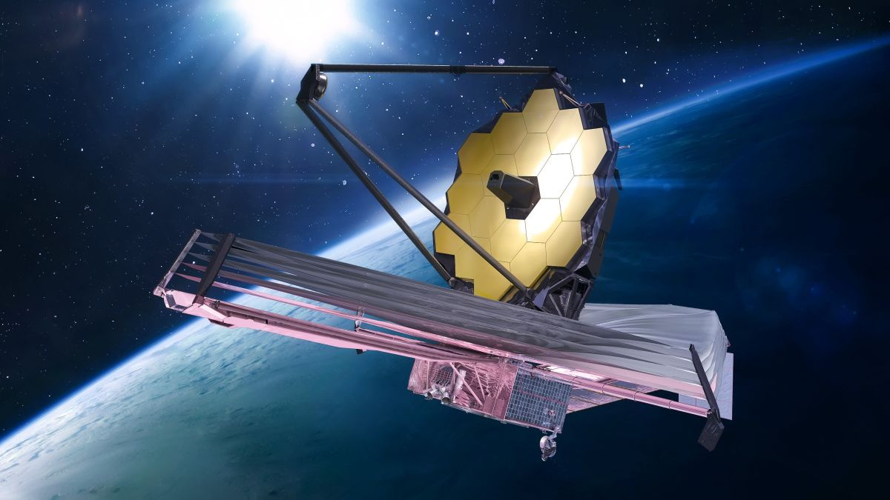
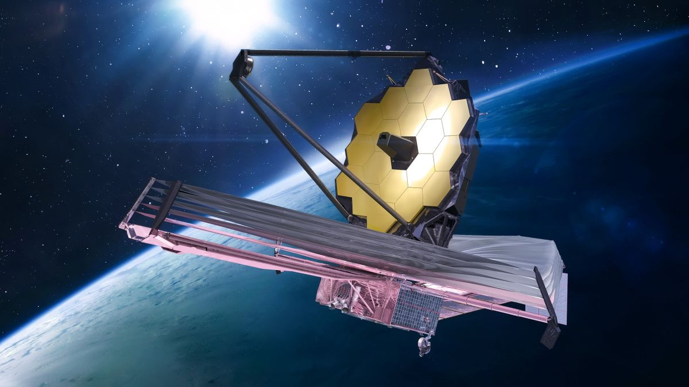
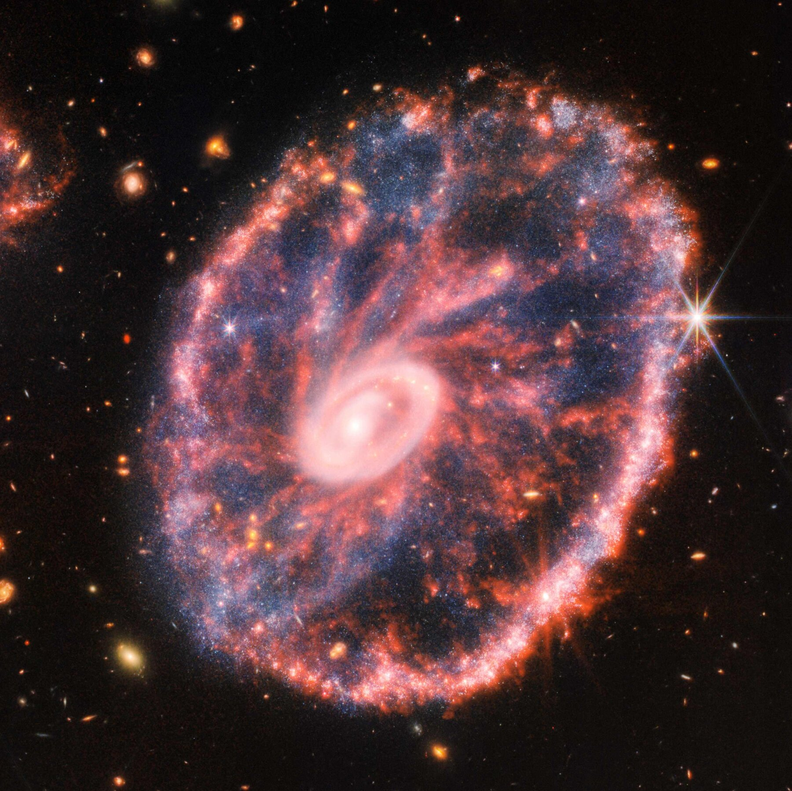
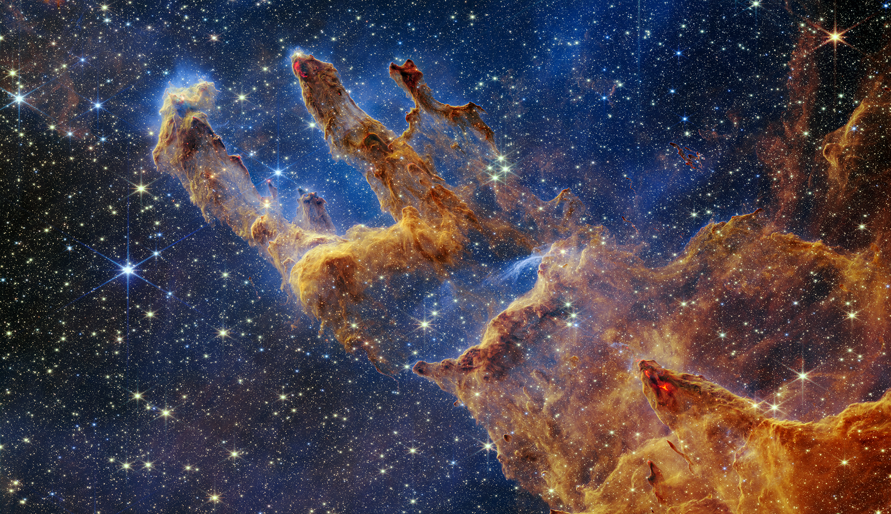
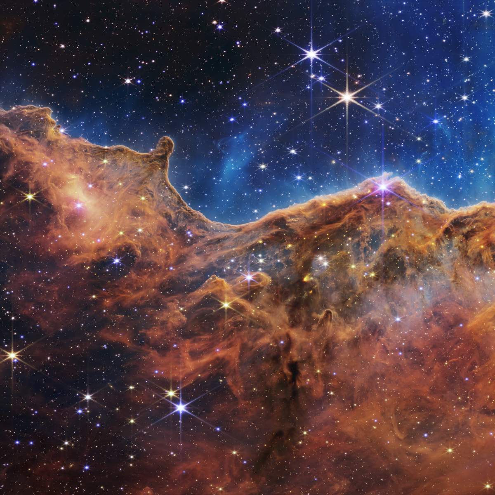
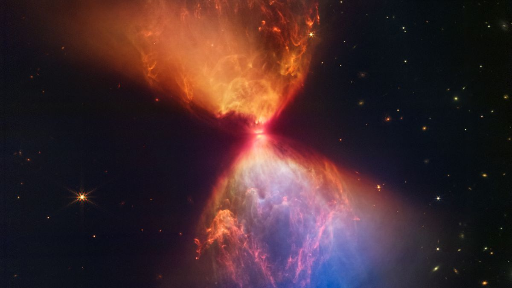

JWST James Webb Space Telescope
 

Photos clicked by JWST


- JWST is the most powerful space telescope
- It was launched on 25th December 2021 .
- It has an average life expectancy of 10 years
- It costs around 10 Billion Dollars or 1000 crores.
- JWST can see about 13.6 Billion years into the past by the using its infrared-sensing instruments